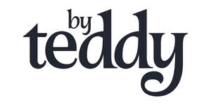

Trade Mark Journal No.2025/051 19 December 2025
UK00004308416 10 December 2025 (3,5,9,18,20,21,25,28,31,35)
Mark 1
By Teddy
Mark 2

- Class 3
- Non-medicated cosmetics and toiletry preparations; cosmetics; cosmetics for animals; cosmetics for pets; bath preparations for pets; pet soaps; soaps for pets; pet sprays; pet wipes; pet shampoos; non-medicated pet shampoos; shampoos for pets; shampoo for animals; animal grooming preparations; conditioning sprays for animals; non-medicated pet conditioners; pet conditioners; pet powders; grooming creams for pets; oils for cleaning purposes for pets; non-medicated dentifrices; dentifrices for pets; non-medicated mouth washes for pets; non-medicated toothpaste for pets; non-medicated paw balms for pets; perfumery; essential oils; perfumes for animals; pet colognes; deodorants for animals; cologne for animals; bleaching preparations and other substances for laundry use; liquid laundry detergents for pets; rinsing agents for laundry for pets; cleaning, polishing, scouring and abrasive preparations; cleaning preparations for animals; cleaning preparations for pets; polishing preparations for pets; non-medicated ear cleaners for pets; cleaners for litter trays.
- Class 5
- Pharmaceuticals, medical and veterinary preparations; sanitary preparations for medical purposes; dietetic food and substances adapted for medical or veterinary use; disinfectants; preparations for destroying vermin; fungicides, herbicides; animal washes; medicated animal feed; insecticidal animal shampoo; insecticidal animal shampoos; medicines for animals; vitamins for animals; antiparasitic collars for animals; dietary supplements for animals; vitamin supplements for animals; pharmaceutical preparations for animals; protein supplements for animals; feeding stimulants for animals; neutraceutical preparations for animals; pharmaceutical preparations for animal skincare; medicated additives for animal foods; medicated additives for animal feeds; medicated supplements for animal feedstuffs; antibiotic food supplements for animals; mineral dietary supplements for animals; medicated skin treatment for animals; medicated supplements for foodstuffs for animals; powders for killing fleas on animals; insect repellents for use on animals; preparations of trace elements for animal use; pharmaceutical products for skin care for animals; trace element preparations for use by animals; dietary supplements for human beings and animals; preparations to prevent chewing or biting by animals; preparations of trace elements for human and animal use; nutritional additives to foodstuffs for animals, for medical purposes; disposable pet diapers; pet odour neutraliser; vitamins for pets; attractants for pet animals; medicated shampoos for pets; antiparasitic preparations for pets; dietary supplements for pets; dietary pet supplements in the form of pet treats; anti-flea collars for pets; petroleum jelly for veterinary use; petroleum jelly for medical purposes; deodorizing preparations for pet litter boxes; herbal sore skin ointments for pets; herbal anti-itch ointments for pets; absorbent diapers of paper for pets; absorbent diapers of cellulose for pets; sanitary pants for pets; diapers for pets; pharmaceutical preparations for the treatment of worms in pets; dietary supplements for pets in the nature of a powdered drink mix; vitamin and mineral supplements for pets; veterinary preparations; veterinary vaccines; veterinary diagnostic reagents; insecticidal veterinary washes; medicines for veterinary purposes; enzymes for veterinary purposes; veterinary preparations and substances; antibiotics for veterinary use; disinfectants for veterinary use; pharmaceutical preparations for veterinary use; hygienic preparations for veterinary use; lotions for veterinary purposes; nutritional supplements for veterinary use; dog lotions for veterinary purposes; bacterial preparations for veterinary purposes; sanitary preparations for veterinary use; dietetic food adapted for veterinary use; biochemical preparations for veterinary use; pain relief medication for veterinary purposes; greases for medical or veterinary purposes; medical foodstuff additives for veterinary use; reagent paper for medical or veterinary purposes; yeast for medical, veterinary or pharmaceutical purposes; bacteriological preparations for medical and veterinary use; sandalwood oil for medical, pharmaceutical and veterinary purposes; biological preparations for veterinary purposes; chemical preparations for veterinary purposes; enzyme preparations for veterinary purposes; food supplements for veterinary use; feed supplements for veterinary use; ferments for medical or veterinary use; cultures of microorganisms for medical or veterinary use.
- Class 9
- Cameras; pet cameras; pet cams; eyewear for pets; life jackets for pets; pet trackers; pet location mappers; lifejackets for pets; computer software; computer programs; mobile applications; mobile apps; mobile application software; mobile phone application software; web application software; computer application software; computer software, mobile applications and web application software in relation to pet tracking and pet care.
- Class 18
- Leather and imitations of leather; collars, leashes and clothing for animals; neckwear for animals; neckwear for pets; collars for animals; pet collars; leather pet collars; bow ties for pets; bandanas for pets; cooling bandanas for pets; electronic pet collars; collars for pets bearing medical information; pet collar accessories, namely, bows; pet leads; dog leads; pet leashes; dog leashes; leads for animals; clothing for animals; clothing for pets; clothing for domestic pets; pet clothing; garments for pets; hoodies for pets; hoodies for dogs; hooded sweatshirts for pets; sweaters for pets; t-shirts for pets; shirts for pets; coats for pets; blankets for animals; pet accessories, namely, canvas, vinyl and leather pouches for holding disposable bags to place pet waste in; pet accessories, namely, specially designed canvas, vinyl or leather bags attached to animal leashes for holding small items such as keys, credit cards, money or disposable bags for disposing of pet waste; trunks and travelling bags; luggage and carrying bags; bags; backpacks; rucksacks; holdalls; totes; airline bags; pet bags; pet carry on bags; pet carry bags; pet bandanas; backpacks for humans and animals; feed bags for animals; feed bags; belt bags and hip bags; backpacks for pets; pet tags specially adapted for attaching to pet leashes or collars; pet products in the nature of a restraining device, namely, tie-out stakes and tie-out chains; pet products, namely, pet restraining devices consisting of leashes, collars, harnesses, restraining straps, and leashes with locking devices; whips, harness and saddlery; animal harnesses; harness fittings; harness straps; cooling harnesses; bits for animals; pet harnesses; animal skins and hides; rawhide chews for dogs; umbrellas and parasols; walking sticks.
- Class 20
- Furniture; pet furniture; animal housing and beds; pet beds; inflatable pet beds; dog beds; playhouses for pets; dog kennels; pet baskets; dog baskets; pet mattresses; dog mattresses; pet mats; pet seats; dog seats; cushions; pet cushions; dog cushions; pet cradles; scratching posts for pets; mirrors; picture frames; containers, not of metal, for storage or transport; animal crates; dog crates; grooming tables for pets; non-metal pet tags; cat trees; non-metal cat flaps; nesting boxes for pets.
- Class 21
- Pet utensils, namely, kitchen utensils for pets including plastic knives, plastic forks, plastic spoons, plastic sporks, metal knives, metal forks, metal spoons, metal sporks; pet cookware and tableware; litter boxes for pets; litter trays for pets; pet feeding bowls; pet drinking bowls; pet combs and sponges; pet brushes; pet hairbrushes; pet toothbrushes; pet grooming glove; pet deshedding brush; food containers for pets; automatic pet feeder; automatic litter boxes for pets; pet drinking bowls; pet treat jars; pet food scoops; cages for pets; pet lick mats; containers for storing pet food.
- Class 25
- Clothing, footwear, headwear; logo-branded clothing, footwear and headgear; t-shirts; logo-branded t-shirts; printed t-shirts; sweatshirts; logo-branded sweatshirts; hooded sweatshirts; hooded zip-ups; pullovers; half-zip pullovers; shirts; button-up shirts; long-sleeved shirts; polo shirts; long sleeved polo shirts; under shirts; tops; tank tops; crop tops; vest tops; jersey tops; camisoles; blouses; dress shirts; jerseys; sleeveless jerseys; buttoned sweatshirts; crew-neck sweatshirts; sweaters; jumpers; cardigans; vests; gilets; tracksuits; tracksuit tops; jackets; coats; blazers; sports jackets; varsity jackets; bomber jackets; raincoats; denim jackets; leather jackets; jackets made of artificial leather; quilted jackets; rainproof clothing; waterproof clothing; windproof clothing; sportswear; loungewear; dresses; trousers; tracksuit bottoms; suit pants; jeans; sweatpants; joggers; chino trousers; shorts; denim shorts; sweat shorts; skirts; leggings; shoes; boots; trainers; sneakers; slippers; sandals; socks; caps; baseball caps; flat caps; hats; beanies; bandanas; neckerchiefs; cloche hats; bucket hats; headbands; visors; ear bands.
- Class 28
- Games, toys and playthings for animals; pet toys; toys for pets; toys for cats; toys for dogs; games for pets, namely, ball games for pets, tug games for pets and treat-dispensing games; plush toys; flying discs; balls for games; animal replicas and imitation bones as playthings; decorations for Christmas trees; animal decorations for Christmas trees; squeezable squeaky toys; toys of plastic; toys of rubber; pet toys containing catnip; toys of rope.
- Class 31
- Agricultural, horticultural and forestry products, grains and seeds; live animals, birds and fish; cuttlefish bone; bones for dogs; edible chews for animals; litter for animals; sand for animal litter; bark for use as animal litter; litter for cats; fresh fruits and vegetables; foodstuffs and beverages for animals, birds and fish; pet food; foodstuffs for pet animals; pet foods in the form of chews; pet foodstuffs; food for animals; foodstuff for animals; animal foodstuffs in the form of pellets; edible food for animals for chewing; canned or preserved foods for animals; milk-based foodstuffs for animals; cereals preparations being food for animals; wheat proteins for animal food ; edible pet treats; pet treats in the nature of bully sticks; canned foodstuffs for cats; edible chews for animals; edible treats for animals; canned foodstuffs containing meat for cats; beverages for cats; food for cats; edible treats for cats; powdered milk for cats; canned fish for cats; edible silvervine powder for pet cats; edible bones and sticks for pets; pet beverages, pet treats; dog food; dog biscuits; edible dog treats; litter for dogs; bones for dogs; chewing bones for dogs; food preparations for dogs; edible chews for dogs.
- Class 35
- Advertising, promotional and marketing services; retail and online retail services; import-export agency services; business management; business administration; wholesale services in relation to pet food and pet supplies; retail and online retail services in relation to non-medicated cosmetics and toiletry preparations, cosmetics, cosmetics for animals, cosmetics for pets, bath preparations for pets, pet soaps, soaps for pets, pet sprays, pet wipes, pet shampoos, non-medicated pet shampoos, shampoos for pets, shampoo for animals, animal grooming preparations, conditioning sprays for animals, non-medicated pet conditioners, pet conditioners, pet powders, grooming creams for pets, oils for cleaning purposes for pets, non-medicated dentifrices, dentifrices for pets, non-medicated mouth washes for pets, non-medicated toothpaste for pets, non-medicated paw balms for pets, perfumery, essential oils, perfumes for animals, pet colognes, deodorants for animals, cologne for animals, bleaching preparations and other substances for laundry use, liquid laundry detergents for pets, rinsing agents for laundry for pets, cleaning, polishing, scouring and abrasive preparations, cleaning preparations for animals, cleaning preparations for pets, polishing preparations for pets, non-medicated ear cleaners for pets, cleaners for litter trays, pharmaceuticals, medical and veterinary preparations, sanitary preparations for medical purposes, dietetic food and substances adapted for medical or veterinary use, disinfectants, preparations for destroying vermin, fungicides, herbicides, animal washes, medicated animal feed, insecticidal animal shampoo, insecticidal animal shampoos, medicines for animals, vitamins for animals, antiparasitic collars for animals, dietary supplements for animals, vitamin supplements for animals, pharmaceutical preparations for animals, protein supplements for animals, feeding stimulants for animals, neutraceutical preparations for animals, pharmaceutical preparations for animal skincare, medicated additives for animal foods, medicated additives for animal feeds, medicated supplements for animal feedstuffs, antibiotic food supplements for animals, mineral dietary supplements for animals, medicated skin treatment for animals, medicated supplements for foodstuffs for animals, powders for killing fleas on animals, insect repellents for use on animals, preparations of trace elements for animal use, pharmaceutical products for skin care for animals, trace element preparations for use by animals, dietary supplements for human beings and animals, preparations to prevent chewing or biting by animals, preparations of trace elements for human and animal use, nutritional additives to foodstuffs for animals, for medical purposes, disposable pet diapers, pet odour neutraliser, vitamins for pets, attractants for pet animals, medicated shampoos for pets, antiparasitic preparations for pets, dietary supplements for pets, dietary pet supplements in the form of pet treats, anti-flea collars for pets, petroleum jelly for veterinary use, petroleum jelly for medical purposes, deodorizing preparations for pet litter boxes, herbal sore skin ointments for pets, herbal anti-itch ointments for pets, absorbent diapers of paper for pets, absorbent diapers of cellulose for pets, sanitary pants for pets, diapers for pets, pharmaceutical preparations for the treatment of worms in pets, dietary supplements for pets in the nature of a powdered drink mix, vitamin and mineral supplements for pets, veterinary preparations, veterinary vaccines, veterinary diagnostic reagents, insecticidal veterinary washes, medicines for veterinary purposes, enzymes for veterinary purposes, veterinary preparations and substances, antibiotics for veterinary use, disinfectants for veterinary use, pharmaceutical preparations for veterinary use, hygienic preparations for veterinary use, lotions for veterinary purposes, nutritional supplements for veterinary use, dog lotions for veterinary purposes, bacterial preparations for veterinary purposes, sanitary preparations for veterinary use, dietetic food adapted for veterinary use, biochemical preparations for veterinary use, pain relief medication for veterinary purposes, greases for medical or veterinary purposes, medical foodstuff additives for veterinary use, reagent paper for medical or veterinary purposes, yeast for medical, veterinary or pharmaceutical purposes, bacteriological preparations for medical and veterinary use, sandalwood oil for medical, pharmaceutical and veterinary purposes, biological preparations for veterinary purposes, chemical preparations for veterinary purposes, enzyme preparations for veterinary purposes, food supplements for veterinary use, feed supplements for veterinary use, ferments for medical or veterinary use, cultures of microorganisms for medical or veterinary use, cameras, pet cameras, pet cams, eyewear for pets, life jackets for pets, pet trackers, pet location mappers, lifejackets for pets, computer software, computer programs, mobile applications, mobile apps, mobile application software, mobile phone application software, web application software, computer application software, computer software, mobile applications and web application software in relation to pet tracking and pet care, leather and imitations of leather, collars, leashes and clothing for animals, neckwear for animals, neckwear for pets, collars for animals, pet collars, leather pet collars, bow ties for pets, bandanas for pets, cooling bandanas for pets, electronic pet collars, collars for pets bearing medical information, pet collar accessories, namely, bows, pet leads, dog leads, pet leashes, dog leashes, leads for animals, clothing for animals, clothing for pets, clothing for domestic pets, pet clothing, garments for pets, hoodies for pets, hoodies for dogs, hooded sweatshirts for pets, sweaters for pets, t-shirts for pets, shirts for pets, coats for pets, blankets for animals, pet accessories, namely, canvas, vinyl and leather pouches for holding disposable bags to place pet waste in, pet accessories, namely, specially designed canvas, vinyl or leather bags attached to animal leashes for holding small items such as keys, credit cards, money or disposable bags for disposing of pet waste, trunks and travelling bags, luggage and carrying bags, bags, backpacks, rucksacks, holdalls, totes, airline bags, pet bags, pet carry on bags, pet carry bags, pet bandanas, backpacks for humans and animals, feed bags for animals, feed bags, belt bags and hip bags, backpacks for pets, pet tags specially adapted for attaching to pet leashes or collars, pet products in the nature of a restraining device, namely, tie-out stakes and tie-out chains, pet products, namely, pet restraining devices consisting of leashes, collars, harnesses, restraining straps, and leashes with locking devices, whips, harness and saddlery, animal harnesses, harness fittings, harness straps, cooling harnesses, bits for animals, pet harnesses, animal skins and hides, rawhide chews for dogs, umbrellas and parasols, walking sticks, furniture, pet furniture, animal housing and beds, pet beds, inflatable pet beds, dog beds, playhouses for pets, dog kennels, pet baskets, dog baskets, pet mattresses, dog mattresses, pet mats, pet seats, dog seats, cushions, pet cushions, dog cushions, pet cradles, scratching posts for pets, mirrors, picture frames, containers, not of metal, for storage or transport, animal crates, dog crates, grooming tables for pets, non-metal pet tags, cat trees, non-metal cat flaps, nesting boxes for pets, pet utensils, namely, kitchen utensils for pets including plastic knives, plastic forks, plastic spoons, plastic sporks, metal knives, metal forks, metal spoons, metal sporks, pet cookware and tableware, litter boxes for pets, litter trays for pets, pet feeding bowls, pet drinking bowls, pet combs and sponges, pet brushes, pet hairbrushes, pet toothbrushes, pet grooming glove, pet deshedding brush, food containers for pets, automatic pet feeder, automatic litter boxes for pets, pet drinking bowls, pet treat jars, pet food scoops, cages for pets, pet lick mats, containers for storing pet food, clothing, footwear, headwear, logo-branded clothing, footwear and headgear, t-shirts, logo-branded t-shirts, printed t-shirts, sweatshirts, logo-branded sweatshirts, hooded sweatshirts, hooded zip-ups, pullovers, half-zip pullovers, shirts, button-up shirts, long-sleeved shirts, polo shirts, long sleeved polo shirts, under shirts, tops, tank tops, crop tops, vest tops, jersey tops, camisoles, blouses, dress shirts, jerseys, sleeveless jerseys, buttoned sweatshirts, crew-neck sweatshirts, sweaters, jumpers, cardigans, vests, gilets, tracksuits, tracksuit tops, jackets, coats, blazers, sports jackets, varsity jackets, bomber jackets, raincoats, denim jackets, leather jackets, jackets made of artificial leather, quilted jackets, rainproof clothing, waterproof clothing, windproof clothing, sportswear, loungewear, dresses, trousers, tracksuit bottoms, suit pants, jeans, sweatpants, joggers, chino trousers, shorts, denim shorts, sweat shorts, skirts, leggings, shoes, boots, trainers, sneakers, slippers, sandals, socks, caps, baseball caps, flat caps, hats, beanies, bandanas, neckerchiefs, cloche hats, bucket hats, headbands, visors, ear bands, games, toys and playthings for animals, pet toys, toys for pets, toys for cats, toys for dogs, games for pets, namely, ball games for pets, tug games for pets and treat-dispensing games, plush toys, flying discs, balls for games, animal replicas and imitation bones as playthings, decorations for Christmas trees, animal decorations for Christmas trees, squeezable squeaky toys, toys of plastic, toys of rubber, pet toys containing catnip, toys of rope, agricultural, horticultural and forestry products, grains and seeds, live animals, birds and fish, cuttlefish bone, bones for dogs, edible chews for animals, litter for animals, sand for animal litter, bark for use as animal litter, litter for cats, fresh fruits and vegetables, foodstuffs and beverages for animals, birds and fish, pet food, foodstuffs for pet animals, pet foods in the form of chews, pet foodstuffs, food for animals, foodstuff for animals, animal foodstuffs in the form of pellets, edible food for animals for chewing, canned or preserved foods for animals, milk-based foodstuffs for animals, cereals preparations being food for animals, wheat proteins for animal food , edible pet treats, pet treats in the nature of bully sticks, canned foodstuffs for cats, edible chews for animals, edible treats for animals, canned foodstuffs containing meat for cats, beverages for cats, food for cats, edible treats for cats, powdered milk for cats, canned fish for cats, edible silvervine powder for pet cats, edible bones and sticks for pets, pet beverages, pet treats, dog food, dog biscuits, edible dog treats, litter for dogs, bones for dogs, chewing bones for dogs, food preparations for dogs, edible chews for dogs.
By Teddy Ltd
Representative: Trade Mark Wizards Limited